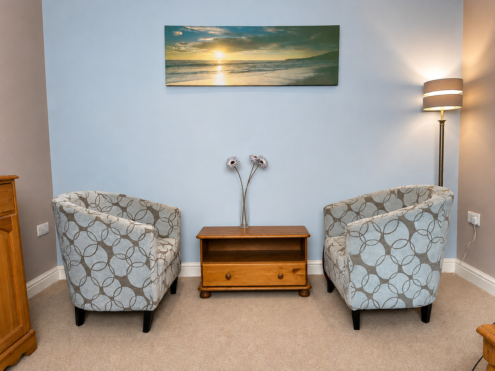
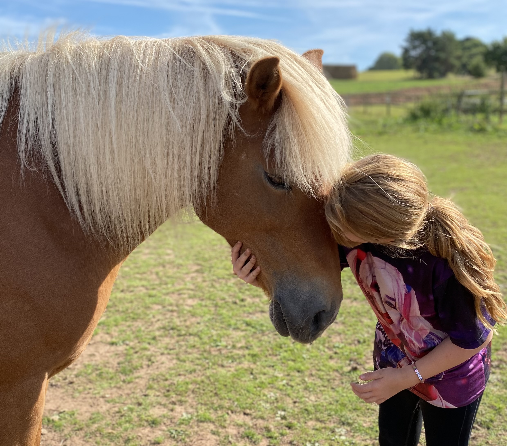

Whether you are looking for talking therapy, something more grounded in nature, or support for a child or young person — there is space here for you.

I offer counselling for adults, children, and young people — providing a safe, confidential space to explore whatever is causing difficulty or distress. People come for many reasons, including depression, anxiety, bereavement, loss, separation, abuse, trauma, PTSD, low self-esteem, and relationship issues.
My approach is integrative, meaning I draw on different therapeutic models to meet your individual needs. With a strong foundation in person-centred therapy, I begin by understanding your experience in the present, listening carefully to what is happening for you now and helping you explore your thoughts, feelings, and challenges at your own pace. From there, we may look at how past experiences influence your current situation and emotional responses.
As insight grows, we begin to look towards the future. Solution-focused techniques can help shift your perspective from feeling stuck to seeing possibilities — identifying goals, exploring new ways of thinking, and taking steps towards meaningful change.
I also integrate Cognitive Behavioural Therapy (CBT), which helps identify unhelpful thought patterns, challenge fears and anxieties, and develop practical strategies for managing difficult emotions and situations. This combined approach supports both emotional understanding and positive, lasting change.
Counselling is available in person in a private, comfortable setting or online, offering flexible support while maintaining a warm, non-judgmental and professional space.

Equine Assisted Counselling and Learning offers a unique, experiential approach to supporting emotional wellbeing and personal development. Through ground-based activities with horses, participants gain greater insight into their thoughts, feelings, and behaviours, supported by the horse's natural sensitivity to human emotion.
I provide one-to-one sessions for children, young people, and adults, as well as small group sessions of up to six participants. Programmes are tailored to individual needs, with extensive experience working alongside primary and secondary schools, SEN departments, residential children's homes, and wider organisations.
This includes supporting children and young people with additional SEN learning needs, emotional regulation difficulties, and those who have experienced significant trauma. Sessions are designed to be safe, nurturing, and developmentally appropriate, helping participants build confidence, resilience, self-esteem, and emotional regulation.
Horses offer immediate and honest feedback, making them powerful partners in developing self-awareness, communication skills, boundaries, and emotional understanding. Many participants experience positive changes in confidence, empathy, behaviour management, and overall wellbeing. Alongside therapeutic support, sessions can also help improve engagement, trust, problem-solving skills, and relationship building in a calm and natural environment.
Working with children and young people requires a different approach. They do not always have the language to express what they are feeling, so I use creative and therapeutic methods — art, craft, play, sand tray work, and the animals themselves. These approaches allow children to communicate their inner world in a way that feels natural and safe.
I have many years of experience supporting children and teenagers through anxiety, bereavement, behavioural challenges, SEN needs, autism, ADHD, and PTSD. I am also an external provider for a local Academy Trust and am DSL Safeguarding trained, which strengthens my work across educational and multi-agency settings.
If you are a parent or carer looking for support for a child or young person, please get in touch for an initial conversation about what might work best.
I have been a clinical supervisor for many years and value the variety, depth, and professional connection it brings. I particularly enjoy supporting trainee counsellors as they grow in confidence and move toward qualification.
My approach is integrative, grounded in the person-centred model and informed by Cognitive Behavioural Therapy (CBT), systemic thinking, and the Seven Eyed Model of Supervision. I work within the BACP Ethical Framework and follow the professional standards of Horses in Education and Therapy International (HETI).
I also offer equine-assisted counselling supervision for practitioners who incorporate horses into their therapeutic work. Supervision is available monthly or fortnightly, online and in person.
People come for all kinds of reasons. Some are going through something specific. Others just know that something doesn't feel right. Both are completely valid.
Anxiety & worry
Depression & low mood
Bereavement & loss
Relationship difficulties
Trauma & PTSD
Low self-esteem
Stress & burnout
Life transitions
Separation & divorce
Abuse & complex trauma
SEN · Autism · ADHD
Anger & behavioural challenges
Exam stress
Eating difficulties
Sleep difficulties
Something you can't quite name
There is nothing to prepare. Just get in touch and I will take it from there.
Send a message or call. No commitment, no pressure — just a chance to ask questions and see if it feels right.
I will have a short conversation to understand what you are looking for and answer any questions you have — before any commitment to sessions.
The first session is a chance to meet properly, talk through what has brought you here, and decide together how you would like to move forward.
Sessions are priced to be accessible. A free initial consultation is offered to assess your needs with no commitment required. I am happy to have an open conversation about fees at any stage.
£60
per hour · individual counselling
Available in person at Weston-under-Redcastle or online. For schools and organisations, I work on a service level agreement basis with tiered pricing — please get in touch to discuss.
£50 / £75
per hour / 1.5 hours · clinical supervision
Available monthly or fortnightly, in person or online. Supervision is a professional requirement for practising counsellors and is available to both qualified practitioners and trainees.
Payment accepted by cash or BACS bank transfer. A free initial consultation is available to assess your needs before any commitment to sessions.
Get in touchGetting in touch doesn't mean committing to anything. Just send a message and I will come back to you within one working day.
Get in touch